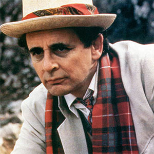

|
|||||||||||||
|
The Seventh DoctorPortrayed by Sylvester McCoy The Seventh Doctor is the seventh incarnation of the protagonist of the long-running BBC television science fiction series Doctor Who. He was portrayed by the actor Sylvester McCoy. The Seventh Doctor was originally light-hearted and prone to clownish behaviour, which masked his intellect and courage. As he matured, he took a much darker turn. He became a master manipulator who saw the battle between good and evil as a game of chess and everyone around him as pawns in the game of fighting evil. Frequently, he would see only the "bigger picture" rather than the world before him. He devastated Ace by labelling her, among other things, an "emotional cripple" during his battle with Fenric. This was necessary for her to briefly abandon her belief in him, weakening Fenric's power, which he did not explain until later. Despite his manipulative actions, such as (by one account) using psychic powers to make Mel leave, the Seventh Doctor did care for his companions. He had a paternal relationship with Ace, which soured when Ace found herself unable to deal with the Doctor's growing emotional coldness. |
||||||||||||